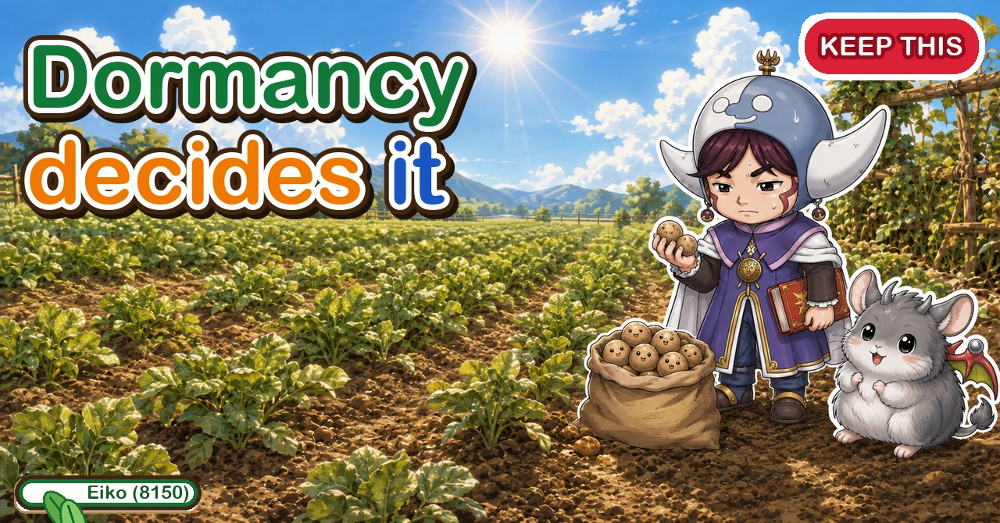
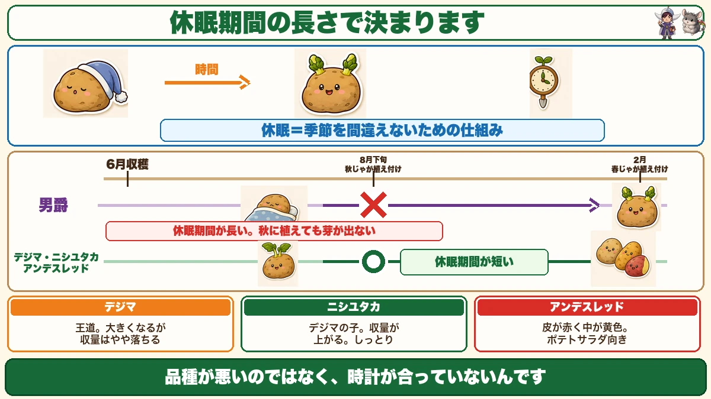
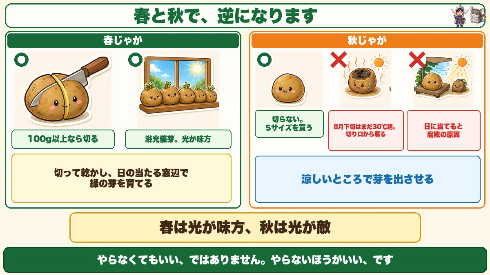
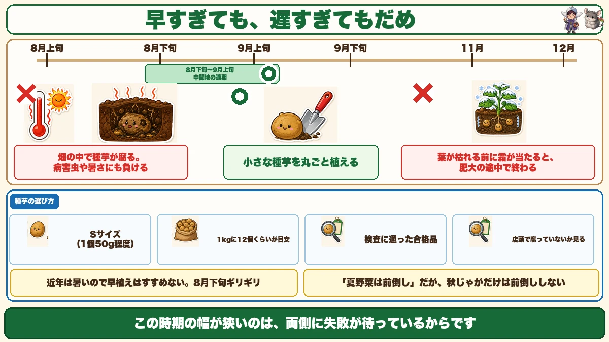

Some varieties simply won't grow in autumn 🥔 Their dormancy is too long

🥔 "I assumed I could use the same variety as spring."
🥔 "I planted them and nothing came up."
🥔 "The seed potatoes rotted in the ground."
Hello, I'm Eiko. Eight years of growing vegetables organically and without pesticides, and a teaching licence in science.
Late summer is when an autumn potato crop starts. And an autumn crop reverses almost everything you do in spring.
The point, up front:
Some varieties won't work in autumn at all.
Not because of flavour or size — because their dormancy is too long ☺️
Dormancy

What this diagram says （図解の文字）
- The length of dormancy decides it
- Dormancy = the mechanism that stops it mistaking the season
- Early summer harvest → late summer autumn planting → late winter spring planting
- × long-dormancy varieties — planted in autumn, they don't shoot
- ○ short-dormancy varieties
A potato has a dormant period — a stretch after harvest during which it will not sprout.
You know it from the kitchen: a potato sits in the cupboard for weeks doing nothing, and then one day it has shoots. That's dormancy ending.
Why the mechanism exists
A potato is a swollen underground stem. If nobody digs it up, it overwinters in the soil.
If it sprouted the day it was ready, it would sprout into winter and die.
So it sleeps first. Dormancy is the mechanism that stops it mistaking the season.
And the length varies by variety
This is the whole issue. Dormancy length is a varietal characteristic.
- Long dormancy — many of the standard spring maincrops
- Short dormancy — the varieties sold specifically for autumn planting
An autumn crop goes in at the end of summer. A long-dormancy potato harvested in early summer is still asleep then.
Plant it and nothing happens. The variety isn't bad — its clock doesn't match.
An autumn crop only works with a short-dormancy variety.
Three autumn varieties
Dejima — the standard. The autumn equivalent of a classic spring maincrop. Large, floury, and the yield is a little on the low side. If you're unsure, this one.
Nishiyutaka — the one I'd suggest next. Bred from Dejima specifically to raise its yield. Holds together in cooking, with a waxier, moister texture. If you've grown Dejima, try this.
Andes Red — red skin, yellow flesh. Texture close to a floury variety; excellent in potato salad, and children love digging them up. Worth knowing: it's primarily known as an autumn-planting variety, and it works in spring too.
Can you use your own from the spring crop?
Honestly: buying seed for autumn is the right answer. But if you want to try, a short-dormancy variety has a chance. Andes Red is the best candidate, since it's sold for autumn planting anyway. Several popular varieties sit mid-range on dormancy — usable, but not ideal.
Two things that reverse

What this diagram says （図解の文字）
- Spring and autumn reverse
- Spring ○ cut anything over 100 g ／ ○ chit in light — light is an ally — cut, dry, and grow green shoots on a sunny windowsill
- Autumn ○ don't cut; buy small seed ／ × late summer is still over 30 °C — the cut face rots
- × light causes rot — sprout them somewhere cool
① Don't cut the seed
In spring you cut anything over 100 g and turn one potato into many.
In autumn, plant them whole.
The reason is heat. Planting time is still above 30 °C. In spring a cut face callouses over and is protected; in late summer heat, it rots.
So buy small ones
If you aren't cutting, large seed is wasted. Buy small seed from the start:
- about 50 g each
- roughly a dozen in a 1 kg bag
- choose the bag with most small ones in it
Large seed in the bag just leaves you deciding whether to cut. Choose small and the decision disappears.
And check the bag in the shop. Shops are hot in late summer and some are already rotting on the shelf.
② Keep them out of the light
In spring you chit them on a bright windowsill for several weeks to produce short green shoots.
In autumn you don't.
And not "you needn't" — you shouldn't. Same reason: in the heat, light causes rot.
In spring light is an ally; in autumn it's the enemy. Completely reversed.
Sprout them somewhere cool instead
- Keep them somewhere cool, out of the sun
- Plant once they've started to shoot, if you can
Why bother? Because an autumn crop has a short run to the first frost. A spring crop has four months; an autumn crop has only until the frosts arrive.
Planting an already-shooting potato buys extra bulking time. It's about making the most of a short season.
The planting window is narrow

What this diagram says （図解の文字）
- Too early and too late both fail
- ○ late summer to very early autumn is the window
- × the seed potato rots in the ground; it loses to pests and to heat
- Plant small seed potatoes whole
- × frost before the tops die ends the bulking halfway
- Choosing seed: small size
Late summer to the very start of autumn. In a colder region, earlier — the frosts arrive sooner and a late planting won't make it.
Failure waits on both sides
Too early:
- there are still days above 30 °C
- the seed potatoes rot in the ground
- they lose to heat and to pests
Too late:
- harvest falls into early winter
- frost arrives while the tops are still alive
- bulking ends halfway through
And it's the opposite instinct to spring
With spring potatoes, earlier planting means a longer season and a bigger crop. With autumn potatoes, planting early costs you the seed to rot.
Summers are getting hotter, so I wouldn't plant early. Right at the end of the hot weather is the target.
Summer crops are increasingly worth bringing forward. Autumn potatoes are the exception, because the thing you're racing is heat.
To sum up
- ✅ Long-dormancy varieties won't shoot if planted in autumn
- ✅ Dormancy = the period after harvest when it won't sprout
- ✅ It exists so the plant doesn't mistake the season
- ✅ Length varies by variety; autumn needs a short one
- ✅ Dejima (standard) / Nishiyutaka (higher yield) / Andes Red (red skin)
- ✅ Andes Red is an autumn variety that also works in spring
- ✅ Always buy certified seed; never plant eating potatoes
- ✅ Don't cut the seed — the cut face rots in the heat
- ✅ Buy small seed, about 50 g, and plant whole
- ✅ Check the bag in the shop for rot
- ✅ Don't chit in light; keep them cool and plant once shooting
- ✅ In spring light helps; in autumn it causes rot
- ✅ Plant at the end of the hot weather, not before it
- ✅ Too early rots the seed; too late loses the bulking to frost
You don't have to do all of it. Just check the variety before you buy. If its dormancy is long, nothing else you do will help 🥔
Thank you for reading!